数据级并行 DLP¶
Flynn 分类法

SIMD: vector processor¶
- 向量处理器（vector processor）：一种流水线处理器，采用向量数据表示方式并配备相应的向量指令
- 标量处理器（scalar processor）：一种流水线处理器，不采用向量数据表示方式，也没有相应的向量指令
处理方式¶
Example
D = A × (B + C) 其中 A、B、C、D 均为长度为 N 的向量
-
Horizontal processing method：向量计算按行进行，从左到右逐个计算
Example
首先计算 \(d_1 \leftarrow a_1 \times (b_1 + c_1)\) ，接着计算 \(d_2 \leftarrow a_2 \times (b_2 + c_2)\)，以此类推，循环程序如下：
\[ \begin{aligned} k_i &\leftarrow b_i + c_i \\ d_i &\leftarrow a_i \times k_i \end{aligned} \]循环里的两个语句存在数据相关，因此有 N 个数据相关，需要进行 2N 次功能切换（每次计算都切换）。
缺点
- 在计算每个分量时，会产生 RAW 相关，因此流水线效率较低
- 如果采用静态多功能流水线，流水线必须频繁切换功能，其吞吐率甚至低于顺序串行执行
- 因此，水平处理方式不适合向量处理器
-
Vertical processing method
- 处理器要求：Memory-Memory Structure
- 向量指令的源向量和目标向量都存放在存储器中，运算产生的中间结果也需要送回存储器
Example
先计算加法，B+C 得到一个向量 K，再计算乘法，A*K 得到 D
只有 1 次数据相关，2 次功能切换
-
Group (Horizontal and vertical) processing method：将向量划分为若干组，组内做纵向运算，组间做横向运算
- 处理器要求：Register-Register Structure
Example
设 N = S × n + r，其中 N 为向量长度，S 为分组数，n 为每组长度，r 为余数
如果剩余的 r 个元素也单独作为一组处理，则总共有 S + 1 组
总共有数据相关：S+1 次，功能切换：2(S+1) 次
CRAY-1¶
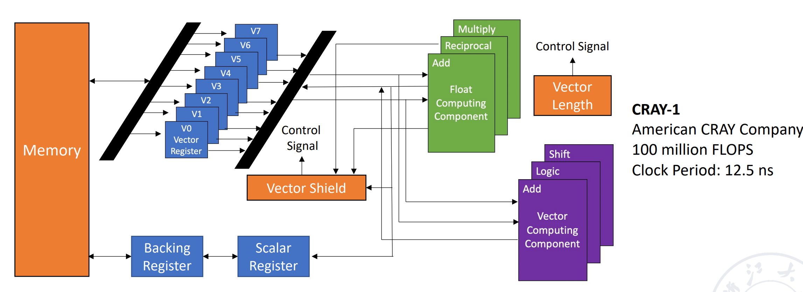
- CRAY-1：寄存器-寄存器型（Register-Register）向量流水线处理机
-
支持的4类基本向量指令：
- 向量-向量运算、向量-标量运算、Load、Store
- 向量加法需要 6 拍；向量乘法需要 7 拍；读写需要 6 拍
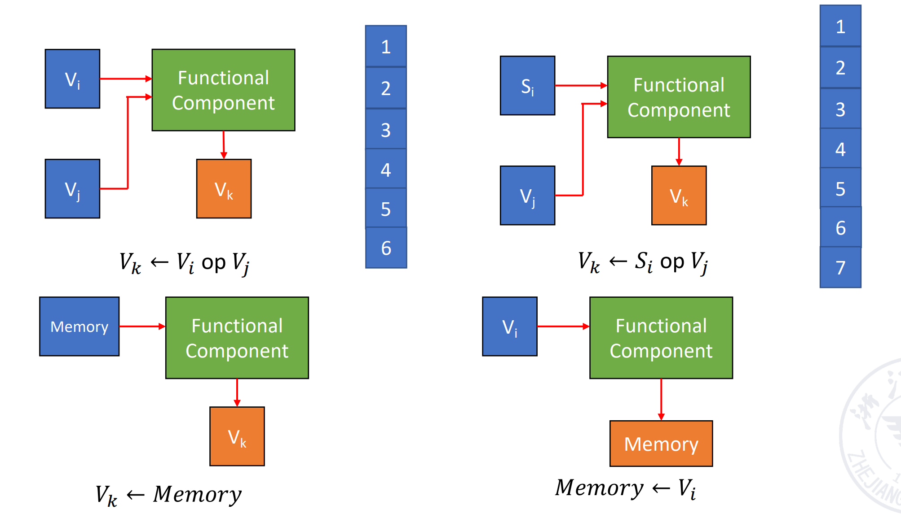
-
结构：
- 有 12 条可并行工作的单功能流水线，能够以流水线方式执行各种地址运算、向量运算和标量运算
- 有 8 个向量寄存器，每组向量寄存器有 64 位
- 每个向量寄存器 Vi 都有一条独立总线，与 6 个向量功能部件相连接
- 每个向量功能部件也都有一条总线，用于将运算结果返回到向量寄存器总线
冲突¶
Success
只要不存在 Vi 冲突和功能部件冲突，那么各个向量寄存器 Vi 与各个功能部件都可以并行工作，从而大幅提高向量指令的处理速度。
-
Vi conflict：并行工作的各条向量指令，其源向量或结果向量使用了同一个向量寄存器 Vi
-
Functional conflict：并行工作的各条向量指令使用同一个功能部件
性能提升方法¶
- 设置多个功能部件并使它们并行工作
-
使用向量链接技术（Vector Chaining），加速一串向量指令的执行
- 两条相关指令，先写后读
- 如果功能部件之间以及源向量之间没有冲突，可以将功能部件链接进行流水线处理，从而加快执行速度
- 本质：将流水线思想引入向量执行过程中，使后续向量指令在前一条指令结果产生后即可开始处理，提高并行度和吞吐量
Example
假设：
- 向量长度为 N ≤ 64，向量元素均为浮点数，向量 B 和 C 已分别存放在向量寄存器 V0 和 V1 中
- 将一个向量元素送入向量功能部件、将运算结果写入向量寄存器、从主存向取数功能部件发送数据均需要 1 拍
GAS 前两条指令没有冲突，可以并行完成；第三条指令需要等前两条指令完成，存在 RAW，不能并行但可以链接
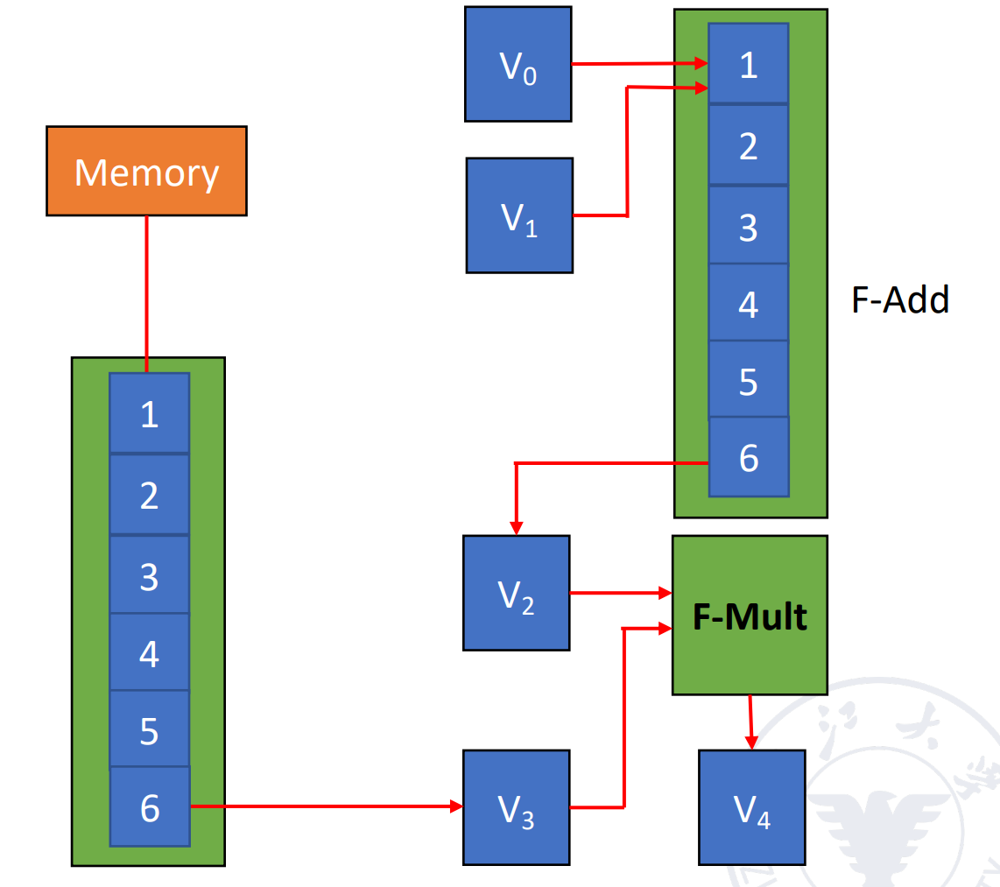
加法计算出一个元素之后，可以紧接着执行乘法，输出第一个元素；之后每一拍输出一个元素
Question
计算以下三种方法得到所有结果所需拍数：
- 串行执行：[(1+6+1)+N-1] + [(1+6+1)+N-1] + [(1+7+1)+N-1] = 3N+22
- 在 (1) 和 (2) 并行执行后执行 (3)：max{[(1+6+1)+N-1], [(1+6+1)+N-1]} + [(1+7+1)+N-1] = 2N+15
- 使用向量链接技术：max{(1+6+1), (1+6+1)} + (1+7+1)+N-1 = N+16
-
采用循环开采技术（Recycling Mining Technology）/分段向量技术（Segmented Vector Technology）：将长向量划分为若干个固定长度的段，采用循环方式处理，每次循环只处理一个向量段
- 使用多处理器系统，进一步提高性能
SIMD: Array Processor¶
- 阵列处理器也称为并行处理器
- 由 N 个处理元素（PE₀ ~ PEₙ₋₁）组成
- 处理元素通过特定互连方式形成数组
-
根据系统中存储器的组成方式，阵列处理器可以分为两种基本结构：
-
分布式存储器（Distributed Memory）：SIMD 阵列处理器的主流
- PE 代表处理器，PEM 是其对应的内存，ICN 是一个内部的互联网络
- 每个处理元素（PE）拥有独立的本地存储器
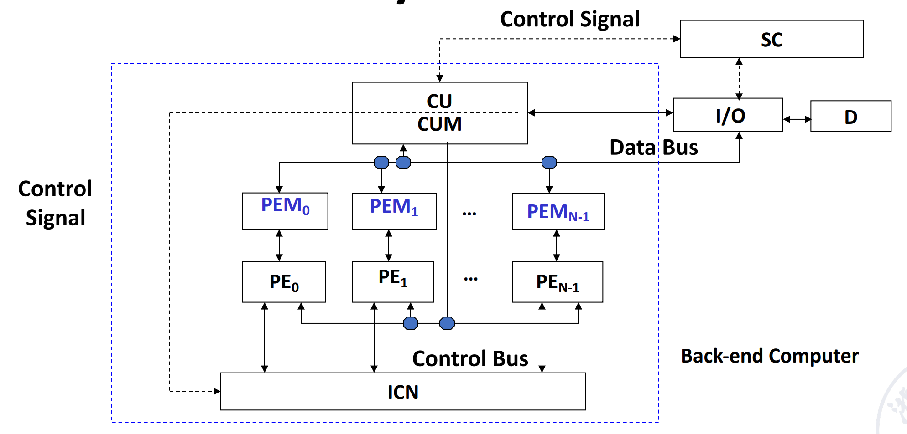
-
集中共享存储器（Centralized Shared Memory）：多个 PE 通过互连网络访问共享存储模块
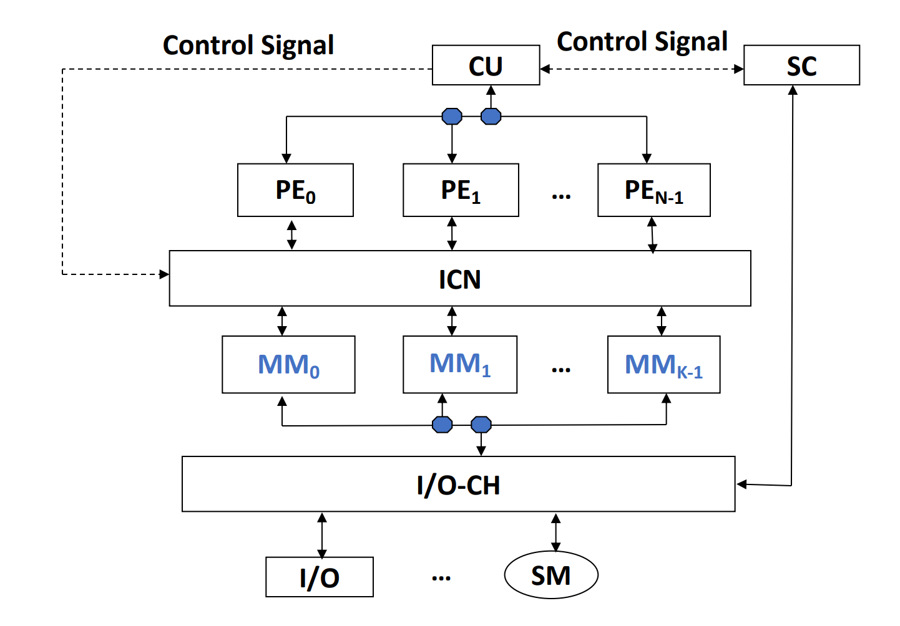
-
ICN¶
ICN 的重要性
若 n 个处理单元任意两两直连，需要连接数 n(n - 1) / 2，直连成本太高，因此需要通过互连网络实现“有限连接下的高效通信”。
- 互连网络是由交换单元按照一定的拓扑结构和控制方式组成的网络，用于实现计算机系统中多个处理器或多个功能部件之间的互连
-
一般由以下五部分组成：CPU、存储器（Memory）、接口（Interface）、链路（Link）、交换节点（Switch Node）
定义
- 接口：一种从 CPU 和存储器获取信息，并将信息发送到其他 CPU 和存储器的设备
- 链路（Link）：传输数据比特的物理通道
- 链路可以是电缆、双绞线或光纤
- 可以采用串行传输或并行传输
- 每条链路都有其最大带宽
- 链路可以是：单工、半双工、全双工
- 链路采用的时钟机制可以是：同步、异步
- 交换节点（Switch Node）：互连网络中的信息交换中心和控制中心，是一种具有多个输入端口和多个输出端口的设备，能够完成：数据缓冲存储、路径选择
Some Key Points
- 互连网络的拓扑结构：静态拓扑、动态拓扑
- 互连网络的时序模式：
- 同步系统：使用统一时钟，例如 SIMD 阵列处理器
- 异步系统：没有统一时钟，系统中的每个处理器独立工作
- 互连网络的交换方式：电路交换、分组交换
- 互连网络的控制策略
- 集中控制模式：具有全局控制器
- 分布式控制模式：没有全局控制器
-
互连网络的分类
- 静态网络：指节点之间的连接路径固定不变的网络，在程序执行过程中这种连接关系保持不变
- 动态网络：由交换开关组成，可以根据应用需求动态改变连接状态，例如总线、交叉开关、多级交换网络等
- 互连网络的目标：通过有限数量的连接方式，使任意两个处理单元（PE）能够在一步或少数几步内完成信息传输，从而实现特定问题求解算法
- 单级互连网络：在唯一的一层网络中，通过有限数量的连接，实现任意两个处理单元之间的信息传输
- 多级互连网络：由多个单级网络串联组成，以实现任意两个处理单元之间的连接
- 输入 j 与输出 f(j) 通常采用二进制编码，其对应函数规律可以从二进制编码中推导出来，该规律即为互连函数
静态 ICN¶
Cube 单级互联网络¶
- N 个输入输出采用 n 位二进制编码（\(n = \log_2 N\)），表示为 \(P_{n-1} \dots P_i \dots P_1 P_0\)
-
共有 n 个不同的互连函数：第 i 位取反
\[ Cube_i(P_{n-1} \dots P_i \dots P_1 P_0) = P_{n-1} \dots \overline{P_i} \dots P_1 P_0 \]Example
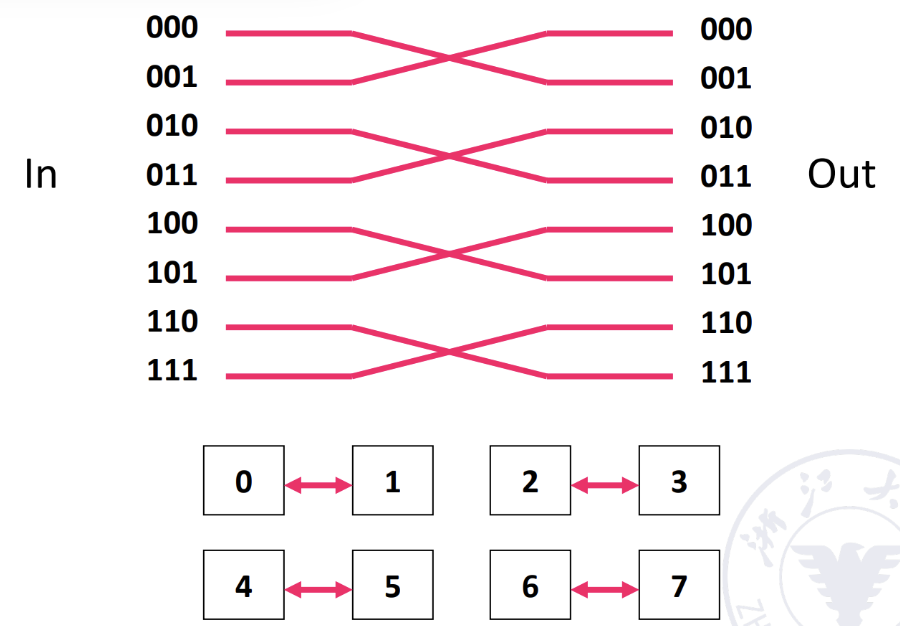
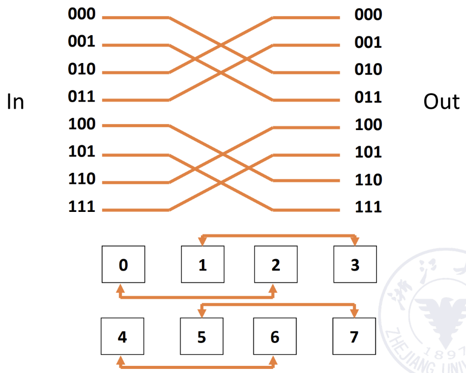
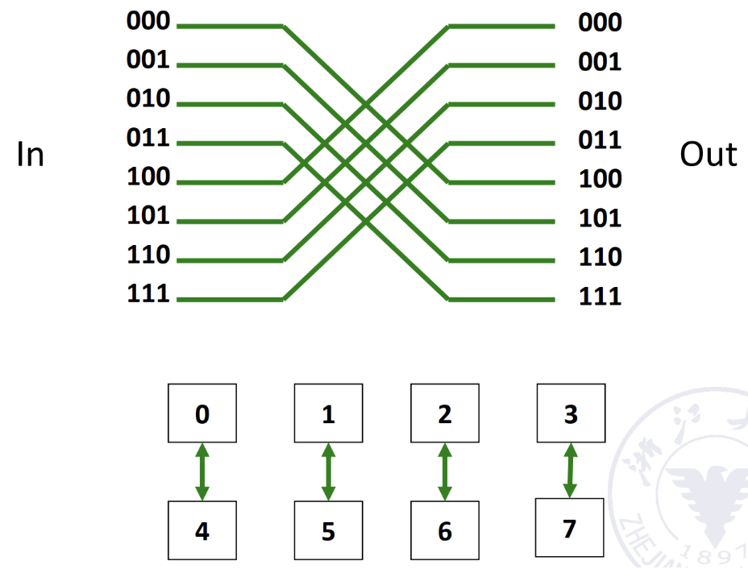
-
三维立方体（3D Cube）能够在最多 3 次传输内，实现任意两个处理单元之间的数据传输
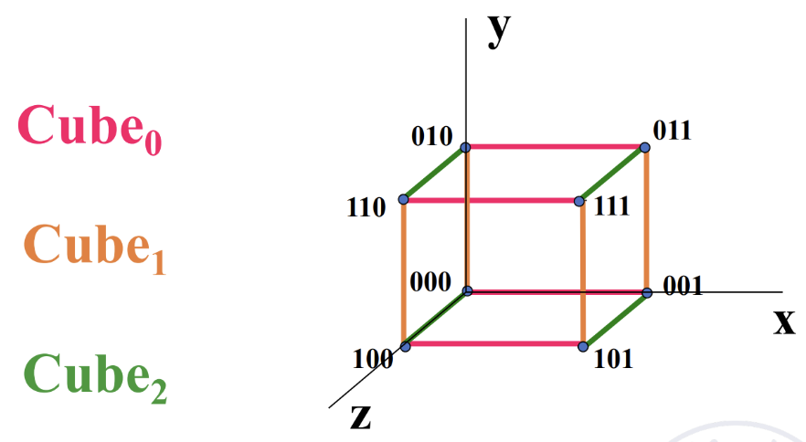
超立方体网络
- 当维度 n > 3 时，称为超立方体网络（Hypercube Network）
- 单级 n 维立方体网络的最大距离为 n，因此，任意两个处理单元（PE）之间的数据传输，最多经过 n 次传递即可完成
PM2I 单级互联网络¶
PM2I（Plus Minus 2^i）的互连函数
- 其中 N 为互连网络中的节点数，j 为节点编号，且 \(0 \le j \le N-1\)，\(0 \le i \le \log_2 N - 1\)
- 一共有 \(2 \log_2 N - 1\) 个不同的互连函数（最后两个一样）
Example: N = 8
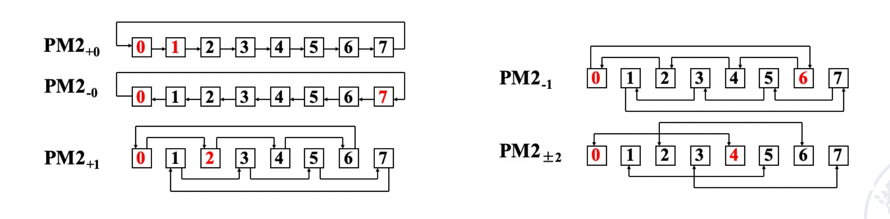
可以通过两步实现互连。（0 可以一步到 1、2、4、6、7，再过一步可以到 3、5）
Shuffle exchange network¶
- 由两部分组成：shuffle 和 exchange
-
N 维 shuffle 函数：移位操作
\[ shuffle(P_{n-1}P_{n-2}...P_1P_0) = P_{n-2}...P_1P_0P_{n-1} \]其中 \(n = \log_2 N\), \(P_{n-1}P_{n-2}...P_1P_0\) 是输入编号的二进制编码
Example
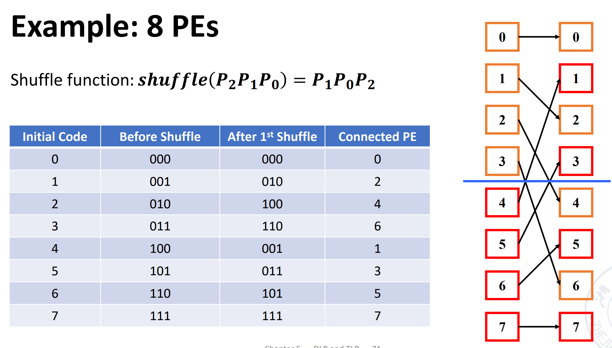
经过 3 次 shuffle 后其他点都回到了原来的位置，但是 000 和 111 并没有与其他点连接（不是连通图），因此我们在此的基础上加上 exchange 的连线
-
exchange 的实现：通过 Cube 0（红线部分）
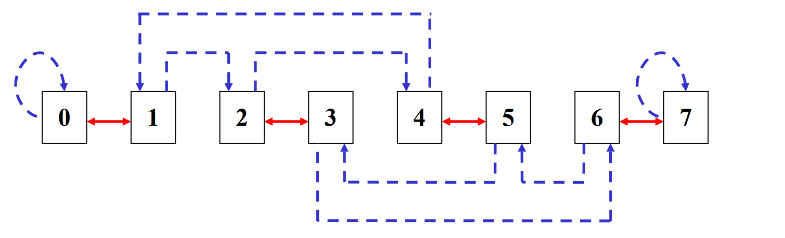
Shuffle exchange network
上述例子任意两个节点相连最多需要 5 步，3 exchanges + 2 shuffles
推广：数据传输最多需要经过 n 次 exchange + n−1 次 shuffle，因此最大距离 = 2n−1
单级互联网络的特点
- 结构简单，成本低
- 连接方式灵活，能够满足不同算法与应用需求
- 传输步骤较少，提高阵列运算速度
- 结构规则性与模块化程度高，有利于提升系统可扩展性
- 便于大规模集成
常见静态拓扑图¶
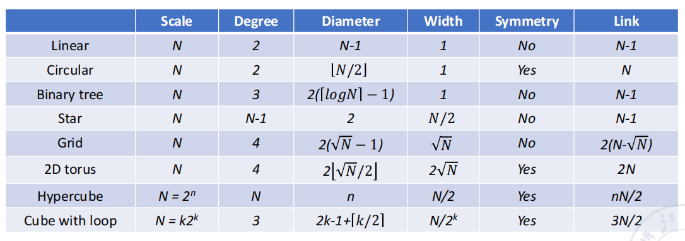
静态拓扑图
具体图片请查看 PPT
动态 ICN¶
- 特性：
- 动态网络中的连接不是固定的，可以在程序执行过程中按需要改变
- 网络中的交换单元是主动的，通过设置开关状态可以重构连接路径
- 只有位于网络边界的交换单元可以直接与处理器相连
- 动态网络主要包括：总线（bus）、交叉开关（crossbar）、多级互连网络
- 为了实现任意 PE 之间的连接，可以使用：
- 循环互连网络：单级网络可以被重复使用多次进行循环连接
- 多级互连网络：将多个单级互连网络串联起来使用
- 多级循环互连网络：在多级互连网络基础上，再进行多次循环复用
- 多级互连网络的差异包括交换单元功能、交换控制方式、拓扑结构
交叉开关¶
- 交换单元：具有 m 个输入和 m 个输出的交换单元被记为 m×m 的交换单元，其中 m = 2^k
- 交换单元的状态：直通（Straight）、交换（Exchange）、上广播（Upper broadcast）、下广播（Lower broadcast）
-
根据交换单元的功能，2×2 交换单元可以分为两功能和四功能交换单元
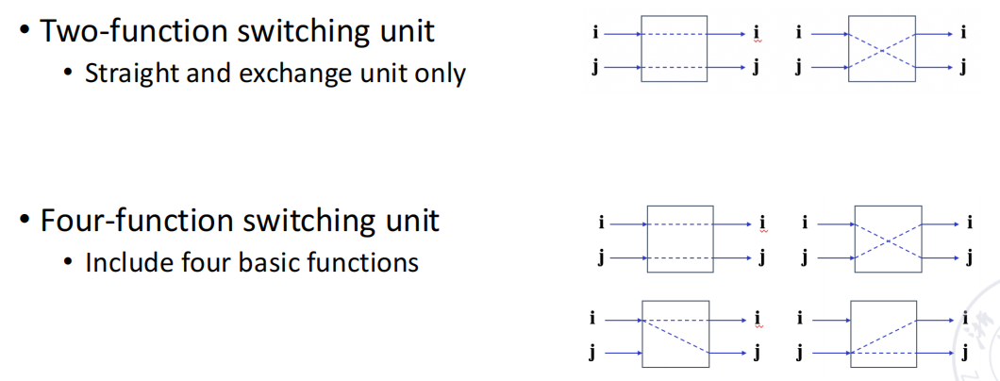
-
多端交换单元（Multi-end switching unit）：增加了广播（broadcast）和多播（multicast）模块
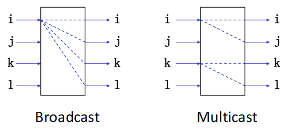
-
拓扑（Topology）：交换单元各级的输入/输出端之间相互连接的一种方式，常见拓扑结构：
- Multi-stage cube
- Multi-stage shuffle exchange
- Multi-stage PM2I
- 以上三种的组合结构
多级 Cube ICN¶
- 交换单元：两功能交换单元
- 控制方式：分级控制、部分分级控制、单元控制
- 拓扑结构：立方体结构
Example: 3D Cube ICN
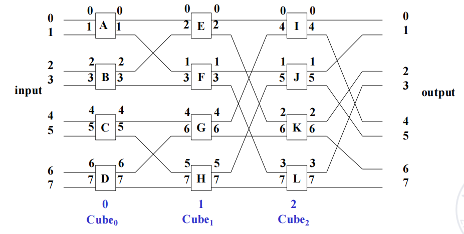
- N 维立方体 ICN：
- 每一级包含 N/2 个两功能交换单元
- 网络级数 \(n = \log_2 N\)
Question1
该并行处理器有 16 个处理器。为了实现等效于以下功能：4 组 4 元素交换、2 组 8 元素交换，以及 1 组 16 元素交换
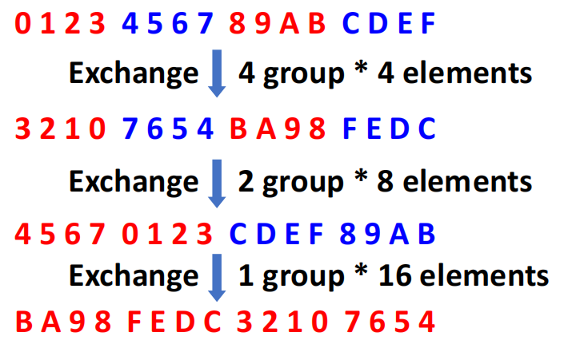
Info
- cube 0 + cude 1 : 4 组 4 元素交换
- cube 0 + cube 1 + cube 2 : 2 组 8 元素交换
- cube 0 + cube 1 + cube 2 + cube 3 : 1 组 16 元素交换
Question2
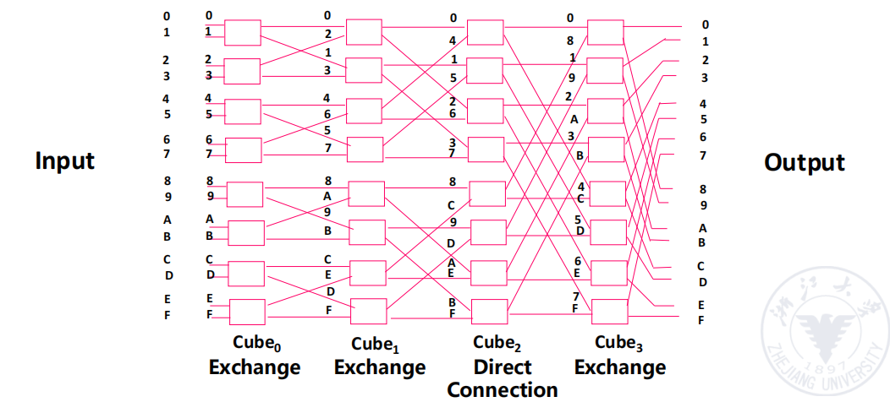
多级 Shuffle exchange¶
-
也称为 Omega 网络，是立方体网络的逆网络
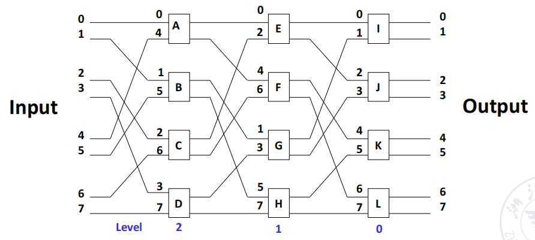
-
特点：
- 交换单元的功能有四种
- 网络拓扑结构采用 Shuffle 连接结构 + 四功能交换单元的形式
- 控制方式采用单元控制
Omega 网络和 n-cube 网络的区别
- 级间数据流方向不同
- Omega 网络的数据流级次：n−1，n−2，…，1，0
- n-cube 网络的数据流级次：0，1，…，n−1
- 交换单元功能不同
- Omega 网络使用四功能交换单元
- n-cube 网络使用二功能交换单元
- 广播能力不同
- Omega 网络能够实现一对多广播功能
- n-cube 网络无法实现该功能
SIMD 优点
- SIMD 架构可以在数据级并行方面充分利用优势，适用于面向矩阵的科学计算、面向多媒体的图像和音频处理器
- SIMD 比 MIMD 更节能，每个数据操作只需获取一条指令
- SIMD 允许程序员继续按顺序思考
DLP in GPU¶
- 基本思想
- 异构执行模型：CPU 是主机（Host）；GPU 是设备（Device）
- 为 GPU 开发一种类似 C 语言的编程语言
- 将各种形式的 GPU 并行统一为 CUDA 线程
- 编程模型采用单指令多线程
- GPU 本质上就是多线程 SIMD 处理器
- 组织
- 每个数据元素对应一个线程
- 多个线程组织成一个线程块（Block）
- 多个线程块组织成一个网格（Grid）
- 线程管理由 GPU 硬件完成，而不是应用程序或操作系统负责
- GPU 存储结构
- GPU Memory（全局内存）：所有 Grid 共享
- Local Memory（局部/共享内存）：同一个 Thread Block 内的所有线程共享
- Private Memory（私有内存）：每个 CUDA Thread 独享
NVIDIA GPU 与向量机
- 与向量机的相似之处
- 适合处理数据级并行问题
- 支持 Scatter-Gather（分散-聚集） 数据传输
- 使用掩码寄存器
- 拥有大型寄存器文件
- 与向量机的不同之处
- 没有标量处理器
- 使用多线程来隐藏内存访问延迟
- 拥有大量功能单元，而向量处理器通常只有少量但深度流水化的功能单元
LLP¶
循环级并行
| C | |
|---|---|
Question
本轮的 S2 会影响下一轮的 S1：交换 S1 S2，随后把第一次和最后一次运算提出去，可以改为下面这样，就可以并行。